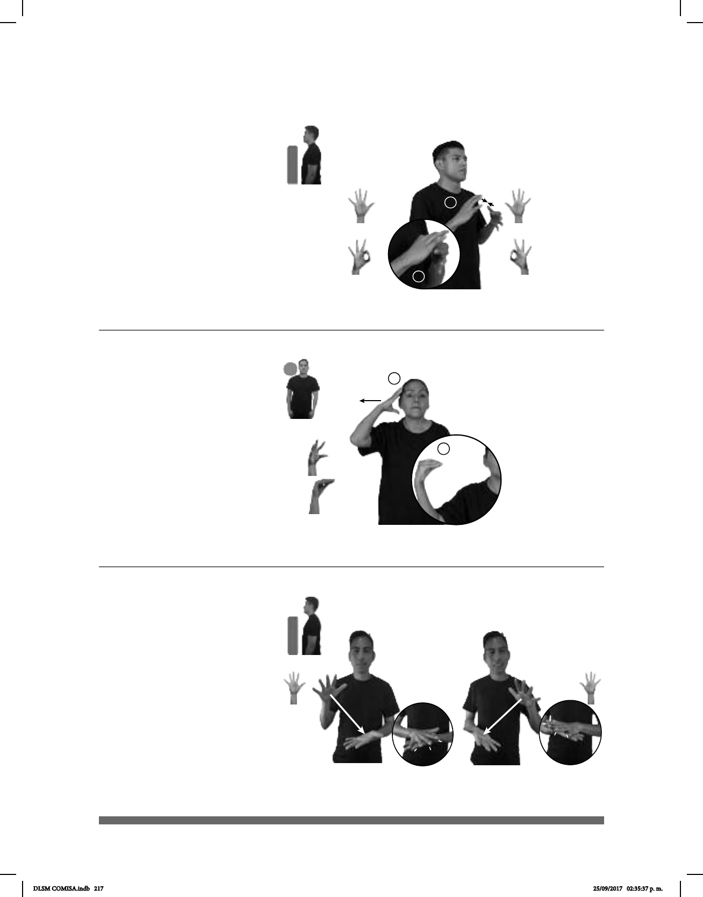

217
Seña: SM
Seña que pasa de 5.4 a
O.9
Palma hacia la izquierda.
A la altura de la oreja, del
centro a la derecha.
Recto mientras el pulgar
toca los dedos de la palma.
1. Estado ubicado en el
oeste de los Estados Unidos Mexicanos
cuya capital es Colima. 2. Capital del
estado Colima, perteneciente a los
Estados Unidos Mexicanos.
1
2
(5-G 74)
UN-AÑO-PASADO pro-YO IR COLIMA, PLAYA pro-YO YA VISITAR
El año pasado fui a Colima y visité la playa.
Seña: SS
Seña que pasa de
5.1 a F.7
Palmas hacia el centro.
A la altura del pecho.
Los dedos pulgar e
índice de cada mano se tocan formando
dos aros que se entrelazan.
1. v. tr. Concordar,
armonizar una cosa con otra. 2. v. tr.
Unir una cosa a otra para que funcionen
juntas o unir una persona a otra para
que se comuniquen entre sí.
1
2
(5-G 73)
_muy
pos-TU ROPA COMBINAR BIEN
Tu ropa combina muy bien.
(5-G 75)
_____________________________o.i.p_
DÓNDE pos-TUYO CÓMPLICE DÓNDE
¿Dónde está tu cómplice?
Seña: SC: I. y II. SB
I. y II. MD y MB 5.1
I. MD palma hacia abajo.
MB palma hacia arriba; II. MD palma
hacia arriba, MB palma hacia abajo.
I. MD a la altura del hombro.
MB a la altura de la cadera; II. MB a la
altura del hombro MD a la altura de la
cadera.
I. La MD golpea la MB en
línea recta; II. La MB golpea la MD en
línea recta.
sust. m. Persona que ayuda a
que se cometa un delito sin ser la autora
directa de él.
DLSM COMISA.indb 217 25/09/2017 02:35:37 p. m.